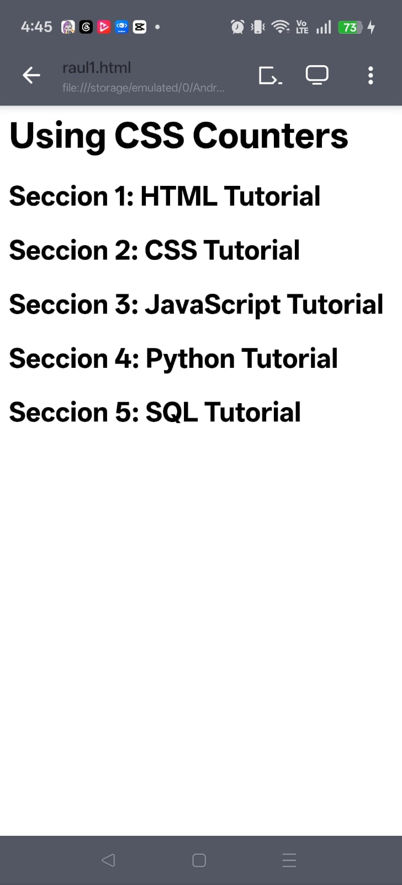
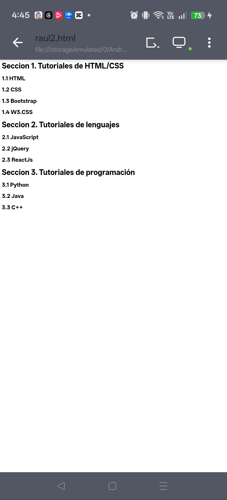
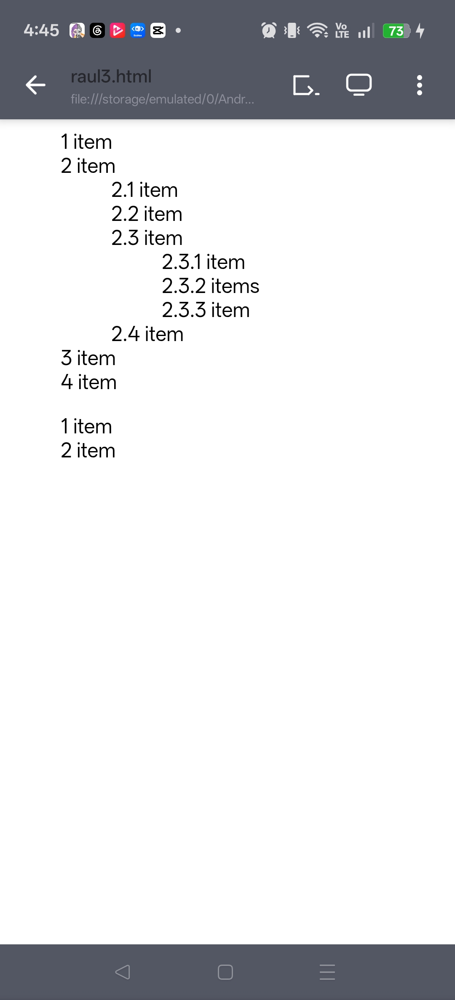

Codigo 1: raul1.html (Contador Lineal Simple) Este codigo implementa un contador unico que avanza de forma secuencial cada vez que encuentra una etiqueta h2. Como funciona el CSS: body { counter-reset: section; }: Al cargar el cuerpo de la pagina, el navegador crea una variable interna llamada section y la inicializa por defecto en 0. h2::before { counter-increment: section; }: Cada vez que el navegador encuentra un elemento h2, le suma 1 al valor actual de la variable section. content: "Seccion " counter(section) ": ";: El pseudoelemento ::before inserta texto justo antes del contenido real del h2. Usa la funcion counter para mostrar el numero actual de la variable. Resultado: El primer h2 pasa de 0 a 1 y muestra "Seccion 1: ". El siguiente pasa a 2, y asi sucesivamente de forma lineal. Codigo 2: raul2.html (Secciones y Subsecciones Dinamicas) Este codigo demuestra como resetear un contador secundario basado en un evento del contador principal. Utiliza dos variables independientes: section y subsection. Como funciona el CSS: body { counter-reset: section; }: Crea e inicializa el contador de secciones grandes en 0. h1 { counter-reset: subsection; }: Esta linea es clave. Cada vez que el navegador se topa con un titulo principal h1, reinicia a 0 el contador de las subsecciones. Esto garantiza que los subtitulos vuelvan a empezar desde .1 en cada nueva seccion. h1:before { counter-increment: section; }: Incrementa el contador principal en 1 y lo muestra con el formato "Seccion X. ". h2:before { counter-increment: subsection; }: Cuando encuentra un h2, incrementa la variable subsection. Para mostrarlo en pantalla, junta el valor de la seccion grande, un punto, y el valor del subtema (por ejemplo: 1.1, 1.2). Flujo del ejemplo: Se encuentra h1 (Tutoriales de HTML/CSS) -> section pasa a 1. subsection se resetea a 0. Se encuentra h2 (HTML) -> subsection pasa a 1. Muestra 1.1. Se encuentra un nuevo h1 (Tutoriales de lenguajes) -> section pasa a 2. subsection se resetea otra vez a 0. Se encuentra h2 (JavaScript) -> subsection pasa a 1. Muestra 2.1 (en lugar de continuar en 1.5). Codigo 3: raul3.html (Contadores Anidados con Herencia) Este es el ejemplo mas avanzado. En lugar de inventar nombres diferentes para cada nivel, utiliza una sola variable llamada section que se clona y se mete una dentro de otra de manera automatica gracias a la estructura de listas de HTML. Como funciona el CSS: ol { counter-reset: section; list-style-type: none; }: Cada vez que se abre una lista ordenada ol, se crea un nuevo contexto para el contador section inicializado en 0. Si hay un ol dentro de otro ol, el navegador guarda el numero anterior y abre una sub-variable. Tambien quita los numeros por defecto del navegador. li:before { counter-increment: section; }: Cada elemento de la lista (li) incrementa el contador del nivel en el que se encuentra metido actualmente. content: counters(section, ".") " ";: Aqui se usa counters en plural. Esta funcion le dice al navegador: "Toma todos los contadores llamados section que esten activos en esta jerarquia de listas, juntalos en orden de profundidad y separalos con un punto". Flujo en el HTML anidado: El primer nivel tiene un contador activo. El segundo elemento es un li. Dentro de ese elemento se abre un nuevo ol. El navegador abre un segundo nivel de conteo. El primer elemento ahi dentro genera el texto 2.1. Dentro de este, se abre un tercer ol. Se crea un tercer nivel en la pila. El primer elemento genera 2.3.1. Al cerrarse las etiquetas de cierre de lista (/ol), el navegador destruye los contadores hijos y regresa limpiamente al nivel superior (por eso despues de 2.3.3 regresa suavemente a 2.4). Al final del documento hay un ol completamente nuevo e independiente, por lo que vuelve a iniciar desde 1.